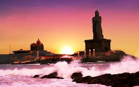
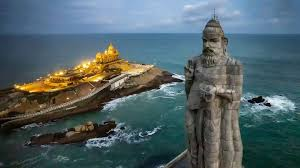
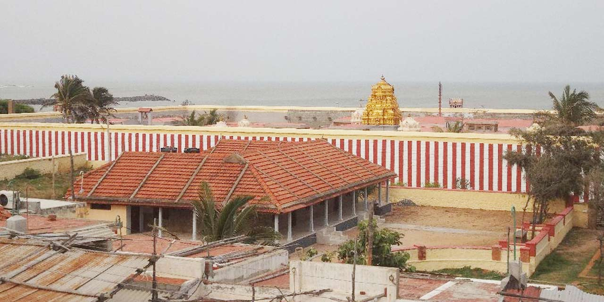
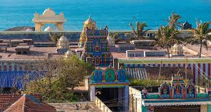
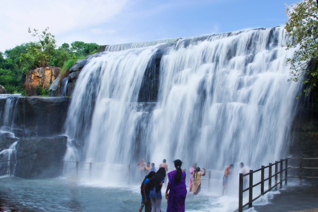

Let's Got To KANYAKUMARI





4-Day Travel Schedule – Kanyakumari
Day 1 – Arrival & Local Exploration
- Arrive in Kanyakumari and check into hotel
- Visit Kanyakumari Beach (meeting point of 3 seas)
- Explore Gandhi Memorial Mandapam
- Enjoy sunset view at Sunset Point
Day 2 –Spiritual And Cultural sights
- Early morning sunrise at the beach
- Visit Vivekananda Rock Memorial
- Thiruvalluvar Statue
- Kanyakumari Temple (Kumari Amman Temple)
Day 3 –Excursions Around Kanyakumari
- Padmanabhapuram Palace (historic wooden palace)
- Suchindram Temple (famous for musical pillars)
- Vattakottai Fort
- Evening leisure walk at the beach
Day 4 – Leisure & Return
- Morning visit to local handicraft shops
- Explore Tsunami Memorial Park
- Quick photography at View Tower
- Departure
Breakfast
- Idiyappam with Coconut Milk
- Appam with Vegetable/Chicken Stew
- Puttu with Kadala Curry
Lunch
- South Indian Meals (Rice, Sambar, Rasam, Poriyal, Papad)
- Fish Curry with Rice (famous coastal style)
- Prawn Masala with Red Rice
Snacks
- Banana Chips
- Masala Vada
- Bondas & Bajji (hot evening snacks)
Dinner
- Kothu Parotta
- Idli/Dosa with varieties of Chutney
- Vegetable Kurma with Chapati
Desserts & Drinks
- Pazha Pradhaman (Banana Payasam)
- Elaneer (Tender Coconut Water)
- Filter Coffee